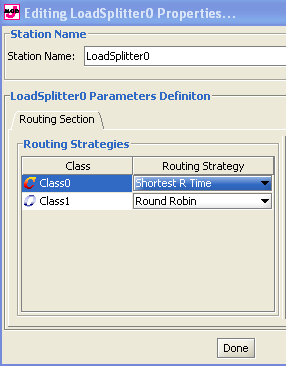
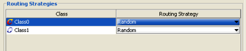
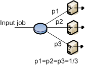
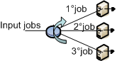
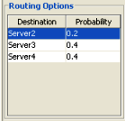
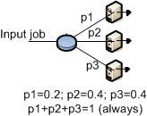
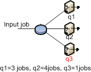
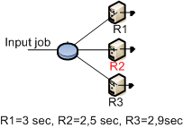
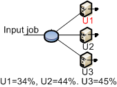
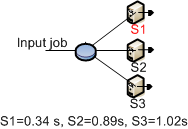

______________________________
A routing station is a dummy station, with service time equal 0, that is used to create more complex and sophisticated routing strategies by sending jobs through one or more such stations. For example, if we wanted two thirds of the incoming traffic at station Z to be randomly routed to either station A or B and the remaining third to go either to station C or D, depending on the shortest queue at the two stations, we could implement the following. Add a routing station, Y, among Z's output stations and define random routing for the three of them (A, B, Y). Then connect Y to C and D and define Shortest queue routing to C and D.
Set or change the properties:
With a double click on its icon you can see this panel:

Station Name: name of the routing station appearing in the model and in the property panel of other stations.
In the routing section, for every class defined, you can decide how the completed jobs are routed to the other devices connected to station for which the routing strategy is defined.

For each class, select the algorithm you want to use for outgoing connections.
|
With this strategy, jobs are routed randomly to one of the stations connected to the routing device. The outgoing links are selected with the same probability.The figure illustrates the routing strategy with 3 output links. For each link the probability to be selected is 1/3.  |
|
With this algorithm, jobs are cyclically routed to the outgoing links according to a circular routing. As the figure shows, the first job is sent to the top station, the second job is sent to the central station, and the third job is sent to the bottom station. The next job would be sent to the top station again, and so on.  |
 |
With this algorithm, you can define the routing probability for each outgoing link.The sum of all probabilities must equal 1. If the values provided do not satisfy the constraint, JSIM automatically normalizes the values before the simulation starts. This strategy requires that you define the probability foreach output link via the panel on the bottom right of the window.  |
|
With this strategy, each job is routed to the device that has the smallest queue length, i.e., number of jobs waiting, at the time the job leaves therouting station. The figure shows a case where the queue lenghts at the devices are 3, 2, and 1 jobs, respectively, from top to bottom. The exitiing job will be routed to the bottom station, since its queue is the shortest(1 job).
 |
|
With this algorithm, jobs are sent to the station where the average response time for the job's class is the smallest at the moment a job leaves the routing station.The figure shows that at the time of routing, the middle station has the smallest average response time, R, so the job will be sent to it.  |
|
With this strategy, the destination device is chosen as the one with the smallest average utilization at the time routing is performed. In the example depicted in the picture, the top station is the least utilized, so it will receive the next job to leave the blue station.  |
|
With this strategy, a job is routed to the device with the smallest average service time, S, for the job's class. In the figure, the exiting job will be routed to the top station since it service time is the minimum among the three.  |